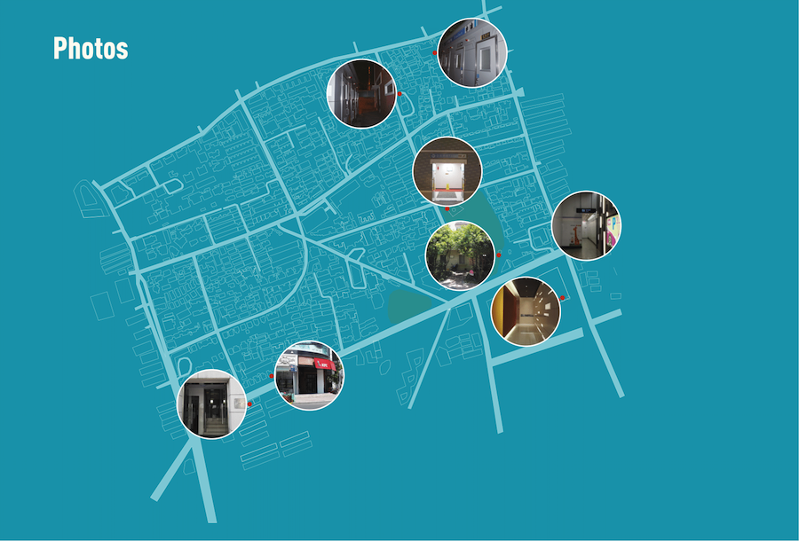

Toilets Around
South Shanxi Road
South Shanxi Road
Data Visualization, Filed Study
School Project
2017.7
School Project
2017.7
Public toilets is one of the most important public facilities in the city，and they reveal the level of civilization and livability of the city. We did a research about toilets around South Shanxi Road and Changshu Road, hoping to find out the current situation of toilets in that area.
First we searched about the positions of public toilets in Baidu Map App and marked them down. But when we went there we found that the information in software had some mistakes. So we did several site visits to find out the exact positions of all the public toilets.

First we searched about the positions of public toilets in Baidu Map App and marked them down. But when we went there we found that the information in software had some mistakes. So we did several site visits to find out the exact positions of all the public toilets.
Then at every toilet, we asked the cleaner for the facility hours. We compared these data with the timetable of subway, and found that most public toilets open after the first subway and close before the last subway. We thought that may cause some problems.
We also counted the amount of different kinds of toilets and made a catalog map for them. The catalog has toilet for men, women, uni-sex which can be divided into urinal, squat toilet and western toilet, and toilets for disabled people which can be divided into urinal and western toilet.Among them, 3 toilets hadn’t taken disabled people into consideration. According to the map, we can find that most public toilet supplies are located around South Shanxi Road.
Based on these data above, we assumed that the average using time is 5 minutes and vacancy rate is 5% to estimate the bearing capacity of each toilet, and combined these data with the facility hours to make a diagram showing the change of public toilets supplies in this area during the day.
We made isovist map for every toilet to see where we can easily find it. And we take screenshot of the heatmap in Baidu Map App every hour. To remove useless information such as road names and other texts, we roughly redrew the heatmaps with Illustrator and Photoshop. Then we cut the heatmaps with isovist area and overlapped them after printing them with parchment paper. This shows the flow of people in the isovist area during the day.
Based on this, we roughly drew a curve to represent the change of demand for public toilets, and compared it with the supplies diagram. We found that because the number of people increased quickly at 9 am, but supply didn’t increase until 10 am, the demand curve is really close to supply line from 9 am to 10 am. So during this time the supply will probably be insufficient. For this part, we didn’t have valid data, and the diagram only shows the variation tendency we observed from the heatmaps.

To further this study, we may go more deeply into the catalog part, gather more information about the different users of public toilets to make user profiles and to see if there are something we can do to enhance user experience.